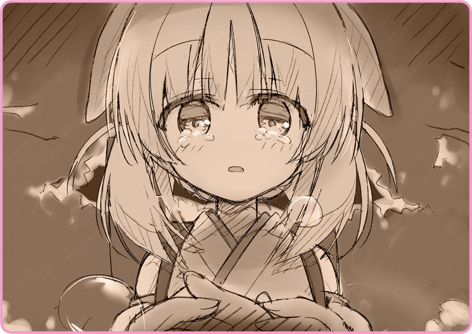

Có gì đó đang chầm chậm tiến lại.
Quả thật là có những ánh đèn pin đơn lẻ đang soi sáng xung quanh, hẳn là cùng loại với cái Lilia vừa cầm. Trước khi được đem bán tràn lan thì chúng vẫn là đồ quân dụng. Phía sau bóng người là một thứ gì đó hình thù kỳ quặc rất nổi bật. Hơi nước liên tục bốc lên từ chiếc ống khói sau lưng nó.
“Là Hoàng Quân đấy.”
“Xem ra họ đã tìm thấy chúng mình rồi. Mà vốn dĩ cũng chẳng thể khác được…”
Chừng như bị đánh động, họ khẽ khàng tiếp cận hai người.
Thứ đang phản chiếu lại ánh trăng kia, khả năng cao chính là súng trường.
“Haizakura, cậu thuộc về Hoàng Quân đúng không?”
“Tớ tìm thấy trong phòng, trên áo khoác của chủ nhân cậu… cổ áo có cài một huy hiệu. Là thường dân cộng tác với quân đội đúng không? Mà, chuyện đó quá rõ ràng rồi.”
Hình nhân Tự hành thời buổi này vô cùng thiết yếu cho trận mạc. Nói một cách đại khái thì đó là phận sự của các chủ nhân.
“Trước mắt cứ giao cậu cho Hoàng Quân bảo vệ là an toàn nhất.”
“Yên tâm đi Haizakura. Tớ sẽ đi… tớ sẽ không ngừng chạy cho đến khi còn có thể.”
Nói trắng ra, Lilia chỉ còn duy nhất lựa chọn đó mà thôi.
Nếu để Hoàng Quân bắt được thì chỉ có nước vào trại tập trung. Xem xét đến cả tội trạng ăn trộm Hình nhân nữa thì khả năng còn có hình phạt nghiêm khắc hơn đang chờ cô.
“Tạm biệt nhé, Haizakura… Cảm ơn cậu.”
Cô vung chiếc khăn choàng và cố sức rời đi.
“Đừng có tới đây!”
Haizakura vốn định đuổi theo, thì bị cô quát lên ngăn lại.
“Đến đây là được rồi… giờ một mình tớ vẫn đi được mà. Tớ không muốn cậu gặp nguy hiểm nữa…”
“Không sao đâu, cậu đã giúp ích cho tớ nhiều lắm rồi… Với tớ, cậu là
Hình nhân Tự hành tuyệt vời nhất đó.”
Những giọt lệ ấm nóng ứa ra, làm tan chảy khối băng vương trên hàng mi cô.
Lilia mỉm cười, cơ hồ muốn nói rằng không cần phải lo cho cô.
“Tớ yêu cậu lắm, Haizakura.”
Và rồi, Lilia bắt đầu chạy, không một lần ngoảnh lại phía sau.
Cô chạy thẳng trên lối mòn, nhanh đến độ suýt ngã biết bao nhiêu lần.
Chạy tới đâu? Lilia chẳng còn nhớ nổi mục tiêu của mình nữa. Cô sẽ tiếp tục vứt bỏ suy nghĩ mà chạy cho tới khi cơ thể không còn cử động được nữa thì thôi.
Tiếng súng nổi lên, vang động khu rừng.
＊ ＊ ＊
Định thần lại, Lilia thấy mình đã ngã xuống đồng tuyết tự bao giờ.
Cơ thể lạnh cóng của cô chẳng còn chút cảm giác nào. Cô chỉ nhớ rõ là có một tiếng động lớn vang lên, xé toang sự tĩnh lặng của khu rừng, và khiến tai cô đến giờ hẵng còn ù ù.
Xem ra cô đã bị tiếng súng bất thần làm cho giật mình và mất thăng bằng. Cô phải nhanh chân rời khỏi nơi này. Tự nhủ như thế, Lilia vội vã tìm cách đứng dậy, nhưng cơ thể cô lại chẳng xê dịch lấy một li. Cứ như thể cô thậm chí đã quên cả cách đi đứng bằng hai chân mất rồi vậy.
Cuối cùng cô cũng xoay xở cử động được đôi tay, bèn vươn ra để xoa đôi chân mình.
Có gì đó nhớp nháp và âm ấm.
“Aaa…”
Khi đưa tay mình lên trước mặt, một mùi sắt nồng nặc xộc thẳng vào mũi cô. Cô đang chảy máu. Quả nhiên là cô đã bị bắn mà. Vào chân sao? Vậy nên cơ thể mới không thể cử động…
Từ đằng xa, cô nghe thấy tiếng Haizakura gọi mình.
Em tập tễnh bước đi trên nền tuyết hướng về cô.
“Xin cậu, đừng có tới đây… Haizakura…”
Cô không muốn em phải thấy bộ dạng mình lúc này.
Nếu là cô bé, chắc chắn em sẽ lo lắng cực độ rồi sinh ra chấn thương tâm lý mất. Cô đã muốn dẫn em tới một nơi an toàn nằm dưới sự bảo hộ của Hoàng Quân mà.
Vậy nên, bất luận thế nào, hai người cũng sẽ phải chia tay tại đây.

Dù vậy, mong ước đó đã không thể thành hiện thực.
Giọng nói có phần trẻ con ấy, cô nghe thấy ở ngay bên cạnh, đâu đó hình như còn trộn lẫn cả nước mắt nữa.
“Tớ đã… tạm biệt rồi… kia mà…”
Tiếng ai đó nghe có vẻ tức giận văng vẳng đâu đây.
Là binh lính Hoàng Quốc chăng? Người đó đang tranh cãi chuyện gì xem chừng khá nghiêm trọng. Chắc là có điều chi khuất tất, nhưng chuyện đó chẳng còn liên quan tới Lilia nữa rồi.
“Thôi, Haizakura… dừng lại đi…”
“Quả báo cả thôi. Tớ đã lừa dối… đã phản bội biết bao nhiêu người rồi… nên tớ mới bị trừng phạt đấy.”
“Cậu, đúng là một Hình nhân kỳ lạ…”
Chất làm mát… không, nước mắt đang giàn giụa tuôn ra không ngừng từ khóe mi em.
“Haizakura… tớ đã vui lắm. Vì cậu đã tin tưởng một kẻ xấu xa như tớ… Vì cậu chẳng hề nghi ngờ gì, mà chấp nhận tớ….”
“Được ở bên cậu… tớ nhẹ nhõm lắm. Tớ đã nghĩ… rằng cuối cùng cũng có một nơi để mình trở về… Cảm giác ấy, đã bao năm rồi tớ chưa được nếm trải…”
“... Thứ như thế, ngay từ đầu đã chẳng tồn tại rồi.”
Phải, cô biết chứ.
Nếu không, họ đã chẳng ném Lilia vào đoàn kịch nữ… mà chẳng bao giờ gửi lấy một lá thư.
“Nếu tớ được gặp cậu sớm hơn… à không.”
Cô khẽ lắc đầu.
Đã đến nước này, cô nhất định phải nói ra điều đó.
“Cảm ơn cậu vì đã gặp tớ… Haizakura.”
Cô nắm chặt lấy bàn tay em.
Bàn tay ấy thật mềm mại và ấm áp. Trong cái thế giới cô quạnh đáng nguyền rủa này, đó là thứ duy nhất giúp cô cảm thấy mình đang sống.
“Nè… làm bạn… với tớ nhé?”
“Thật tốt quá…”
Phù, cô thở ra một hơi.
Không hiểu sao, cô thấy cơ thể mình như nhẹ hẳn đi.
Mặt đất chợt rung chuyển se sẽ.
Âm thanh truyền động của máy móc đang tiến lại gần.
Một hình thể khiến ta phải ngước nhìn. Một ống kính phát ra ánh sáng màu đỏ. Trên tay cầm một khẩu súng máy…
Binh sĩ Dị hình.
Là Hình nhân Cơ khí của Hoàng Quân.
Haizakura khẩn khoản van xin.
Đôi mắt em phát sáng đỏ rực. Phải chăng em đang truyền đi mật mã nào đó cho những Hình nhân khác?
Nhưng mà, làm sao một mong ước như vậy có thể truyền tải được chứ.
Lilia là một kẻ trốn chạy, một người dân tại đất nước đối địch, và cũng là một tội nhân.
Làm gì có ai ở đất nước này lại chịu giúp cô một tay chứ.
Cô chầm chậm nhắm mắt lại, cảm giác như cả cơ thể mình đang dần chìm vào đồng tuyết.
Ánh sáng phát ra từ mắt đám Hình nhân giờ chỉ còn là một hình ảnh hư ảo.
Cô hồi tưởng về ngày đầu năm ấy, đã từ xưa lắm rồi.
Trong một đêm tuyết phủ, mọi người đều quây quần bên bàn ăn.
Ba, mẹ, các anh trai…
Mọi người sẽ thắp lên ngọn nến đỏ rực, ăn một chiếc bánh hình vương miện… và uống trà thảo mộc ngòn ngọt pha chút mật ong. Cả nhà sẽ cùng nhau ca hát. Pháo hoa mùa đông… ánh sáng lan tỏa từ bên ngoài cửa sổ…… hình như nó cũng có màu đỏ… những tháng ngày hạnh phúc….. nơi mình có thể trở về……… phải rồi………… có đấy nhỉ………… ba mẹ từng nói là……… đúng rồi, mọi người yêu con… nhỉ…?

 “Những vị đằng đó là…”
“Những vị đằng đó là…”